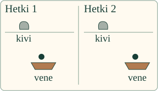
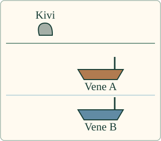

<link rel="stylesheet" href="lesson.css">


<section data-teaching-step="1" data-lesson-role="teaching-step">
<p class="lesson-intro"> Loikka kysyy: voiko matkustaja sekä liikkua että olla paikallaan?</p>
<h2>Valitse, mihin vertaat</h2>
<p><strong>Kuvaan liikkeen valittuun vertailukohteeseen nähden.</strong> Liike tarkoittaa paikan muuttumista. Istuva matkustaja pysyy samassa kohdassa venettä, vaikka vene kulkee rannan ohi.</p>
<p>Katso liike ensin rannalta ja sitten veneestä. Katselupaikan vaihto ei aloita tapahtumaa uudelleen.</p>
</section>


<section data-teaching-step="2" data-lesson-role="teaching-step">
<div data-reference-lab id="mallin-ohjaus" data-lesson-context-source="workbench"><p>Ilman moduulia: liu'uta paperivenettä ja sen matkustajaa pöydällä. Vertaa matkustajan paikkaa ensin pöydällä olevaan kuppiin, sitten veneeseen kiinnitettyyn merkkiin.</p></div>
<details data-lesson-role="hint"><summary>Apua katsomiseen</summary><p>Valitse tilanne ja katselupaikka. Toista liike tai siirry askelittain. Piste merkitsee matkustajan paikkaa. Apulinja seuraa valittua vertailukohtaa. Sen ei tarvitse liikkua kuvassa, jotta muut kohteet voivat liikkua siihen nähden.</p><p>Toisto kestää mallissa 6 sekuntia, normaalisti noin 6 oikeaa sekuntia. Askel siirtää mallia yhden sekunnin. Tauko pysäyttää katselun, ei muuta tilanteen liikettä. Vastaa koko toiston tapahtumasta; lyhyt taukokuva ei yksin kerro, mikä liikkui.</p><p>Voit vastata suoraan tai katsoa uudelleen. Ääneen vastaamista tai kohteiden painamista ei tarvita.</p></details>
</section>


<section data-teaching-step="3" data-lesson-role="teaching-step">
<h3>Sama matkustaja, kaksi kuvausta</h3>
<figure data-lesson-role="worked-example"></figure>
<p><strong>Veneeseen nähden paikallaan, rantaan nähden liikkeessä.</strong> Molemmat kuvaukset voivat olla oikein. Kerro aina, mihin vertaat.</p>
</section>


<section data-teaching-step="4" data-lesson-role="teaching-step">
<p data-lesson-role="question"><strong>Ennusta:</strong> mitä rannan kivelle tapahtuu veneestä katsoen?</p>
<details data-lesson-role="answer"><summary>Katso ajatus</summary><p>Kivi jää kuvassa taakse. Sen paikka veneeseen nähden muuttuu. Kivi ei silti irtoa rannasta.</p></details>
</section>


<section data-teaching-step="5" data-lesson-role="teaching-step">
<h3>Kaksi venettä rinnakkain</h3>
<figure data-lesson-role="worked-example"></figure>
<p>Kun veneet kulkevat rinnakkain yhtä nopeasti samaan suuntaan, vene B pysyy samassa paikassa veneeseen A nähden. Rantaan nähden molemmat liikkuvat. Kokeile tilannetta harjoituksessa.</p>
</section>


<section data-teaching-step="6" data-lesson-role="teaching-step">
<details data-lesson-role="teaching-step"><summary>Tutki: liikkuuko kaikki veneessä samalla tavalla?</summary><p>Valitse kävelijä laiturissa olevassa veneessä. Vene ei kulje, mutta kävelijä liikkuu sen sisällä. Hänen paikkansa muuttuu sekä veneeseen että rantaan nähden. Vertailukohdan vaihto ei siis aina vaihda vastausta päinvastaiseksi.</p><p>Alla oleva malli alkaa kävelijästä laiturissa olevassa veneessä. Voit vaihtaa vertailukohtaa ja käynnistää toiston itse.</p><p>Myös junassa istuva matkustaja pysyy samassa kohdassa penkkiä. Kun juna lähtee asemalta, hänen paikkansa asemaan nähden muuttuu.</p>
<details data-lesson-role="worked-example" data-lesson-context="reference-walk" data-context-source="workbench" data-context-preset="walk" data-context-reveal="model"><summary>Tutki kävelijää veneessä</summary><p data-context-fallback>Malli on ilman JavaScriptiä alkuperäisessä kohdassaan: <a href="#mallin-ohjaus">avaa mallin kohta</a>.</p><div data-context-slot></div><button type="button" data-context-close hidden>Sulje malli</button></details>
</details>
</section>


<details class="teacher" data-lesson-role="teacher-note"><summary>Opettajalle ja ilman ruutua</summary><p>Vuosiluokat 7–9, kanoninen concept/atomic. Vaadittu esitieto on ENV-PHY-MOTION-01. Suureiden yksiköt, nopeuden laskeminen, negatiiviset luvut tai kuvaajat eivät ole tämän sivun uusia avausportteja. Tilanteet ovat ennalta määrättyjä laadullisia malleja; ruudun mitat eivät ole metrejä tai oikean veneen mittakaava. Malli ei selitä liikkeen voimia.</p><p>Yksi tapahtuma ja sama malliaika ohjaavat kaikkia katselupaikkoja. Katselupaikan vaihto siirtää koko näkymää, ei muuta kappaleiden keskinäisiä paikkoja tai kokoa. Veneet eivät käänny. Kahdessa ensimmäisessä tilanteessa A liikkuu tasaisesti; kolmannessa A on kiinni laiturissa. Matkustaja istuu samassa kohdassa venettä, ja masto on kiinnitetty veneeseen. Kävelijän paikka sen sijaan vaihtuu.</p><p>Yleinen sääntö koskee paikan muuttumista, ei pelkkää etäisyyttä yhteen pisteeseen: ympyrää kiertävä kohde liikkuu keskipisteeseen nähden, vaikka sen etäisyys keskipisteestä säilyy. Tämä huomio ei edellytä ympyräliikkeen laskemista. Näissä suoraviivaisissa esimerkeissä voi verrata paikkoja alkuun ja loppuun, koska välissä ei ole paluuta tai kierrosta.</p><p>Harjoitus tarkistaa kaksi annettuun tilanteeseen ja vertailuun sidottua havaintoa. Järjestyksellä ei ole merkitystä. Katselutauko, toisto ja apuviiva säilyttävät saman kysymyksen; vastauksen, tilanteen tai vertailun muutos vanhentaa palautteen. Onnistuminen on tuettua mallin tulkintaa, ei itsenäistä fyysistä tutkimusta, säilyvyyttä, henkilökohtaista formaalia hallintaa tai oppimisvaikutuksen näyttöä. Henkilötietoja ei tallenneta.</p><p>Ilman ruutua liu'uta pahvivenettä pöydällä olevan kupin ohi. Kiinnitä matkustajan merkki veneeseen ja vertaa sen paikkaa kumpaankin. Liikuta sitten merkkiä paikallaan olevan veneen päällä. Aikuinen arvioi fyysiset havainnot erikseen. Todellista veneilyä tai liikkuvassa ajoneuvossa liikkumista ei tarvita.</p></details>


<section data-teaching-step="7" data-lesson-role="teaching-step">
<p data-lesson-role="question"><strong>Lopuksi:</strong> miksi lauseeseen ”matkustaja on paikallaan” kannattaa lisätä vertailukohde?</p>
</section>


